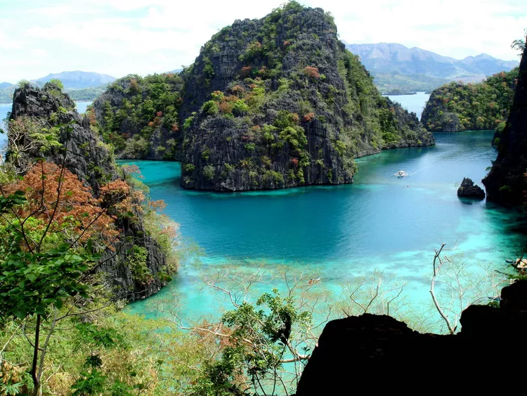
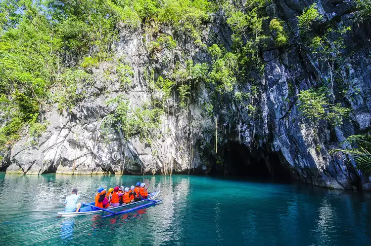
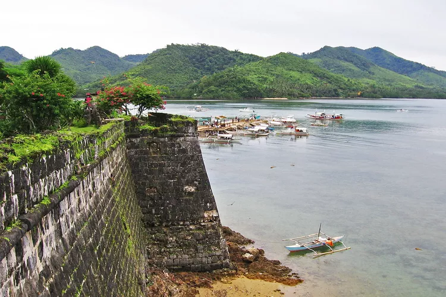

Welcome to Palawan
Home

Kayangan Lake
The water in Kayangan Lake is believed to be some of the cleanest and clearest in the
whole country, which says a lot given how famously clear the hundreds of lakes and lagoons
the Philippines is home to. Located on Coron Island, off the northern end of Palawan, you
can visit the lake on a group tour or book a private guide. After a steep climb up a wooden
staircase through the jungle, you'll find the clear waters of the lake and also one of the
most famous viewpoints in Palawan, which looks out on the bay between Coron and Busuanga Island.

Cabayugan River
The Cabayugan River flows down from the Saint Paul mountain range within the 22,000-hectare
Puerto Princesa Subterranean River National Park before descending into a cave, the title
attraction. From Puerto Princesa, you'll need to take a bus and boat to get to the park, and
because limited slots are available for tour groups, it's best to book your tour with a
local travel agency.

TayTay
Called Fuerza de Santa Isabel by its Spanish builders and Taytay Fort by present-day locals,
this coral and limestone fort was built in the early 1700s to defend Taytay against pirates and
slave raiders. The roughly square-shaped fort occupies an outcropping over Taytay Bay; from this
vantage point, defenders could rake the bay with cannon-fire, sinking any foolhardy pirate ships
within range.
Learn more.